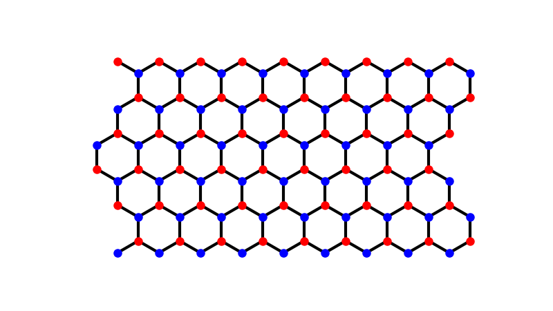
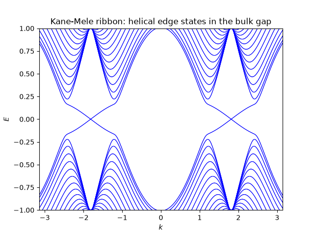

Note
Go to the end to download the full example code.
Edge States on Ribbons#
Cutting a periodic 2D model into a ribbon (periodic in one direction,
finite/open in the other – see tbkit.kspace.ribbon()) is the
standard way to see edge physics in a tight-binding band structure. Two
classic examples:
A zigzag graphene ribbon has a partially-flat band pinned at E=0, built entirely from states localized on the two edges.
Adding Kane-Mele intrinsic spin-orbit coupling (see The Haldane Model: Berry Curvature and a Topological Phase Transition for the closely related Haldane model) opens a bulk gap and produces helical edge states: gapless, spin-momentum-locked modes that cross the bulk gap, one Kramers pair per edge. This is the original model of a 2D (Z2) topological insulator.
import numpy as np
import matplotlib.pyplot as plt
from tbkit.lattice import Lattice
from tbkit.kspace import ribbon, PAULI
DX, DY = 0.5 * 3 ** 0.5, 0.5
unit_cell = [{'tag': 'a', 'r0': (0., 0.)}, {'tag': 'b', 'r0': (DX, DY)}]
prim_vec = [(2*DX, 0.), (DX, 1.5)]
lat = Lattice(unit_cell=unit_cell, prim_vec=prim_vec)
t1 = 1.
graphene_hop = [{'i': 0, 'j': 1, 'R': (0, 0), 't': t1},
{'i': 0, 'j': 1, 'R': (-1, 0), 't': t1},
{'i': 0, 'j': 1, 'R': (0, -1), 't': t1}]
width = 30
Zigzag graphene ribbon: the E=0 edge flat band#
rib = ribbon(lat, graphene_hop, width=width, direction=1)
ks = np.linspace(-np.pi, np.pi, 400)
en = rib.get_bands(ks[:, None])
tol = 1e-2 # a finite-width ribbon splits the edge-state degeneracy by an
# amount exponentially small in the width, so "zero energy"
# needs a little tolerance away from the zone boundary.
n_zero_modes = np.sum(np.any(np.abs(en) < tol, axis=1))
print('Zigzag ribbon: {} k-points host a (near-)zero mode (out of {}), '
'vs. the 1/3 expected analytically.'.format(n_zero_modes, len(ks)))
assert n_zero_modes > len(ks) // 4
fig, ax = plt.subplots()
ax.plot(ks, en, 'b', lw=0.7)
ax.set_xlabel('$k$')
ax.set_ylabel('$E$')
ax.set_title('Zigzag graphene ribbon ({} unit cells wide)'.format(width))
ax.set_xlim([ks[0], ks[-1]])

Zigzag ribbon: 138 k-points host a (near-)zero mode (out of 400), vs. the 1/3 expected analytically.
(-3.141592653589793, 3.141592653589793)
Kane-Mele ribbon: helical edge states inside a spin-orbit gap#
The intrinsic (sz-conserving) spin-orbit term opens a bulk gap, but a Kramers pair of edge states still crosses zero energy somewhere in the Brillouin zone (its momentum is set by where the bulk Dirac points K, K’ project onto this ribbon’s 1D Brillouin zone) – Kramers’ theorem forbids gapping out a single pair of counter-propagating edge modes, which is the hallmark of a Z2 topological insulator (contrast with the zigzag ribbon above, where nothing protects the flat band from a generic perturbation).
lam = 0.1
kane_mele_hop = list(graphene_hop)
for R in [(1, 0), (0, 1), (1, -1)]:
kane_mele_hop.append({'i': 0, 'j': 0, 'R': R, 't': 1j*lam*PAULI['z']})
kane_mele_hop.append({'i': 1, 'j': 1, 'R': R, 't': -1j*lam*PAULI['z']})
rib_km = ribbon(lat, kane_mele_hop, width=width, direction=1, spin=True)
en_km = rib_km.get_bands(ks[:, None])
min_abs_e_per_k = np.min(np.abs(en_km), axis=1)
i_cross = np.argmin(min_abs_e_per_k)
print('Kane-Mele ribbon: edge-state crossing near k={:.4f}, E={:.5f}.'
.format(ks[i_cross], en_km[i_cross, np.argmin(np.abs(en_km[i_cross]))]))
assert min_abs_e_per_k[i_cross] < 0.01
# deep in the "bulk" region of k (far from the edge-state crossing), the
# gap must be fully open.
bulk_gap = min_abs_e_per_k[np.argmin(np.abs(ks))] # at k=0
print('Bulk gap at k=0 (far from the edge-state crossing): {:.4f}.'.format(bulk_gap))
assert bulk_gap > 0.5
fig2, ax2 = plt.subplots()
ax2.plot(ks, en_km, 'b', lw=0.7)
ax2.set_xlabel('$k$')
ax2.set_ylabel('$E$')
ax2.set_ylim([-1., 1.])
ax2.set_title('Kane-Mele ribbon: helical edge states in the bulk gap')
ax2.set_xlim([ks[0], ks[-1]])

Kane-Mele ribbon: edge-state crossing near k=-1.8188, E=0.00161.
Bulk gap at k=0 (far from the edge-state crossing): 1.0095.
(-3.141592653589793, 3.141592653589793)
Total running time of the script: (0 minutes 0.852 seconds)